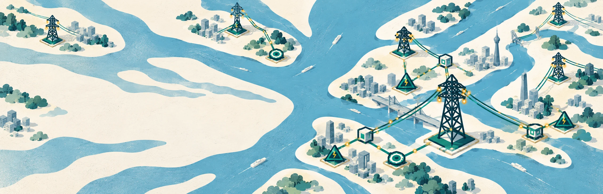

按下暂停，想好再连
观察负荷预告，安排电源、变电站与线路。在新的需求投运前，把准备做在前面。

一个关于连接的独立游戏
从第一条线路，到一座城市的脉搏。
在江河之间，规划属于你的电力网络。
Windows · 单人游戏 · 支持简体中文
城市需要的不只是一条线路，
而是你对每一次变化的回应。
《迷你电网》是一款极简风格的电网规划与管理游戏。布置电厂与变电站，匹配线路电压，用水下电缆跨越江河。当新的用电需求出现，你的网络也将随之生长。
有限的工程补给、不断增长的负荷和变化的政策，让每一次连接都成为一道值得思考的选择。
没有繁复的外表，只有清晰可见的每一次决策。
普通模式支持暂停建设与加速运行。
在下一个需求到来之前，留一点余量，
也留一点自己的解法。
观察负荷预告，安排电源、变电站与线路。在新的需求投运前，把准备做在前面。
留意容量、电压与线路损耗。扩建、增容或转供，找到适合当前城市的方案。
每月的工程补给、负荷改造与政策变化，会不断为你的电网带来新问题。
游戏仍在开发中，欢迎参与它的成长。
硬核模式与沙盒模式正在开发中，尚未在 Demo 中开放。
上海、重庆等其他城市仍在规划与开发中，发布时间尚未确定。
这是一款单人电网规划与管理游戏。你需要建设电源与变电站、匹配电压、安排线路，并随着城市需求增长不断调整供电方案。
目前可体验武汉普通模式与独立教程，支持暂停规划、加速运行、回路切换、本地多存档和可选自动保存。硬核、沙盒及其他城市敬请期待；Demo 不开放硬核随机设备故障。
可以先从独立教程入门，逐步学习建设、匹配电压和备用供电。普通模式允许随时暂停规划，按自己的节奏熟悉电网逻辑。
目前面向 Windows，游戏支持简体中文、繁体中文、英语、德语、日语、韩语和俄语七种界面语言。具体配置要求请以 Steam 商店页面为准。
正式版发布时间尚未确定。欢迎在 Steam 加入愿望单关注后续消息，也可以加入 QQ 群 942372220，与开发者交流试玩反馈。
下一条线路，由你连接。
试玩《迷你电网》，从第一处用电需求开始。
开发中 · 武汉 Demo 可体验